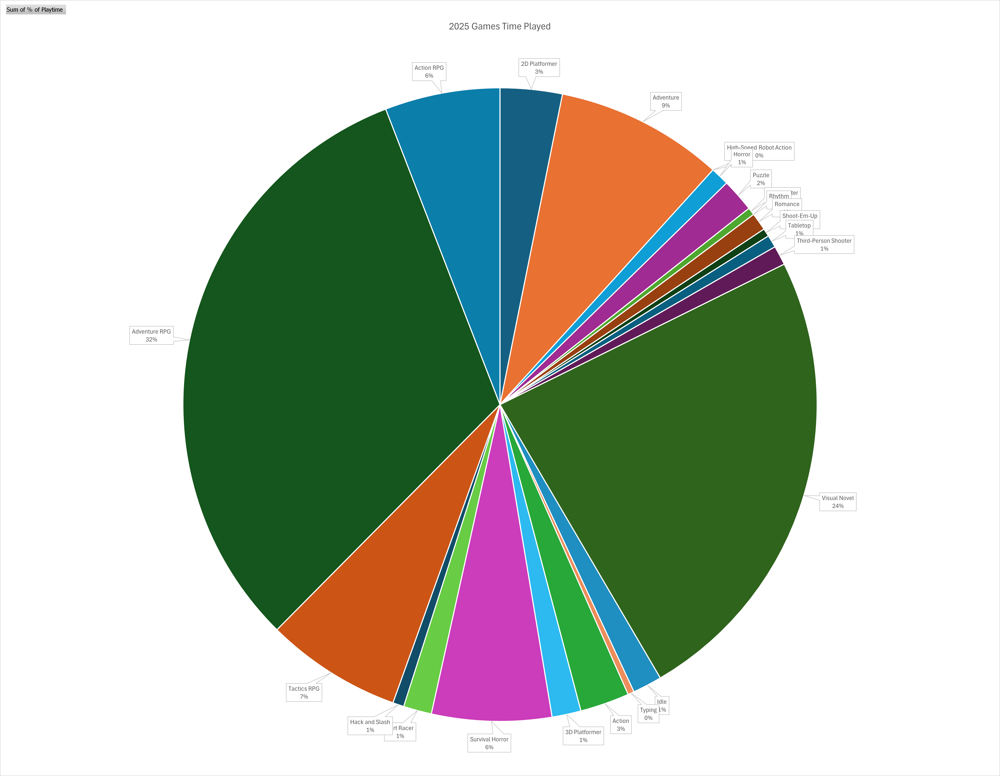
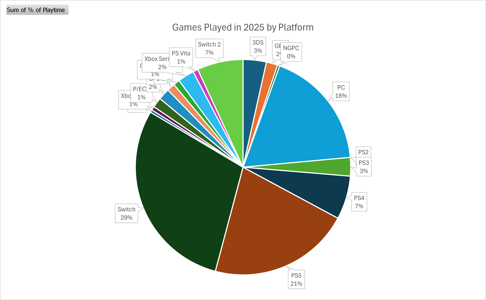
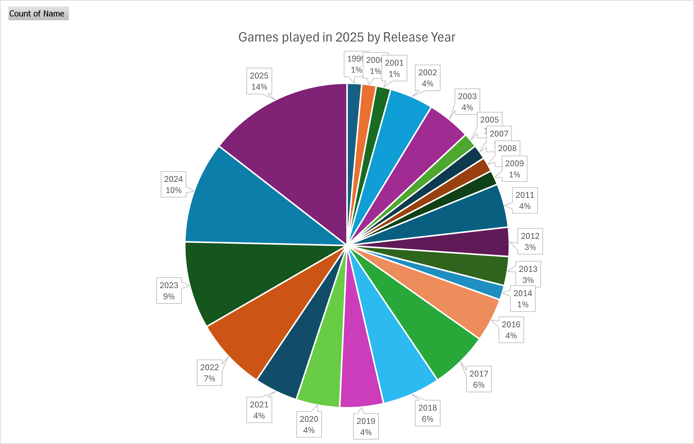
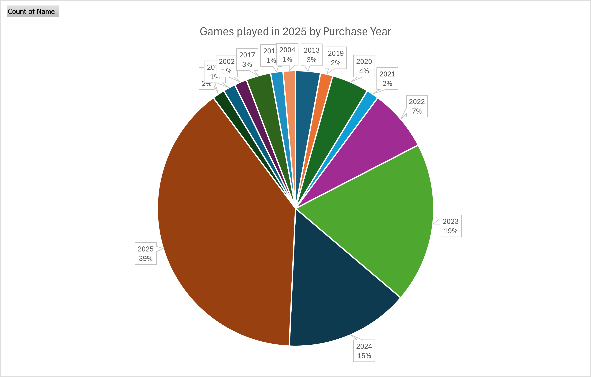
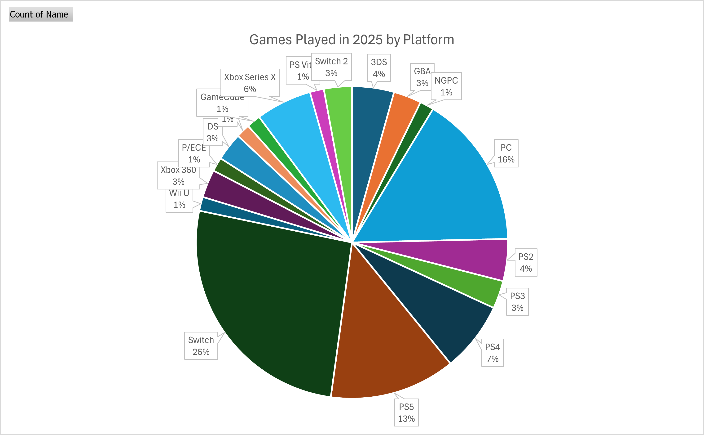

1game1week End of Year Stats
This isn't a 1g1w post. Since this is the end of the year, I wanted to make a post dedicated to wrapping up statistics of the games I played over the year. It's going to follow a similar structure to my mid year post.
As a very minor spoiler, 2025 was easily the most I've ever played in my entire life. Most games played, most hours played. My backlog has also not been this low since 2012, where I was +4. I also bought 12 games that year instead of 78... so by comparison, I'm probably doing just fine.
This post will have various pie charts and images with stats. They had to be made to look small as to not overwhelm how the blog post looks.
If you are interested in seeing the stats (I dunno why, but hey, you do you), you can click the images and they'll come up in full size.
I wanted to answer the following questions:
- How many games have I beaten, and how does it compare to last year?
- What is my total playtime, and how much of it do I spend per platform, per genre, and per game?
- What are the trends to the release year of the games I play?
- What are the trends to the purchase year of the games I play?
- What platforms do I use the most?
- What was my "Game of the Year"?
Let's start with the first:
1) How many games have I beaten, and how does it compare to last year?
I've mentined before that I do not make a 1g1w post for every game I beat. There's a few that I don't feel should be relevant to 1g1w, or I don't care to post about, etc.These come for a variety of reasons, but mostly relate to length, variety, themes. I've tried to gravitate to things I can post about, for the most part.
Thank you Billy for helping me with setting up that table in HTML because I had no idea how to do that :)
In short: up until today, I have beaten 69 (nice) games / DLC this year. If I said I was crushing it back during the midyear post, this absolutely decimates it.
For reference, in the entirety of 2024, I beat a total 26 games (including DLC, etc).
2) What is my current total playtime?
Something I mentioned in midyear, and something I'll mention one more time, is that getting accurate playtimes in 2025 is legitimately horrid. Nothing is accurate, there's a bunch of rounding errors in all consoles, not every game tracks time in-game, etc.For my purposes, I used the following things to track playtime:
- Exophase, which is a third party service that essentially scrapes public playtime data from Steam, Nintendo, Xbox, and PlayStation. Essentially, it grabs all the information and tries to present it to you with little drift / rounding. It's not 100 percent, but it's a good reference.
- PSTimeTracker, which is also a third party service specifically for PlayStation. You essentially add a bot user as a friend, and it tracks what you play when you're online. I don't think it works when you're offline, but my PS5 / Vita are mostly online all the time, so it's fine for the current purpose I have.
- Nintendo Switch Parental Controls. First party service by Nintendo that's aimed at parents, but for a while was the only way to get playtime stats. That being said, Nintendo rounds playtime to, I believe, the nearest multiple of five. So 22 minutes would be counted as 20 minutes.
- Nintendo Store App. Weirdly, in the recently-released application for mobile devices, there was a playtime tracker that used just about the same rounding system as the Parental Controls app. It also categorizes time by day played, which means helped for a few games where I had played previously (like in a collection), and went back for another. In this current 1g1w cycle, the one I got data for this way was Ace Attorney 3.
- In-Game Time Trackers
- OS-level time trackers, like with 3DS, Wii U, Steam, or Analogue Pocket.
There will always unfortunately be a margin of error with these. None of these times are absolute but I tried my best to be sure to keep everything as accurate as I could possibly get it. So... guideline, not absolute.
For example, this is the stats I have for Tokyo Mirage Sessions, which I tracked with three different sites:
Exophase: 44 hours 28 minutes
In Game Time: 41 hours 55 minutes
Nintendo Switch Parental Controls: 34 hours 30 minutes
Nintendo Store App: 41 hours 30 minutes
For the sake of it, I tend to trust time in this order:
1. In-Game Time. There is potentially a little bit of incorrectness here. For an RPG for example, if I fail a battle or a boss or something and am kicked back into the title screen, whatever time I spent in that attempt is lost to the ether. If I tried a boss three times, and each of those attempts took me 10-20 minutes each, that's between 30 minutes and 60 minutes lost. However, that's not necessarily all that common. So... it's fine.
2. OS-level time trackers for 3DS, Wii U, Steam, and Analogue Pocket. I do NOT trust the OS time tracker for PlayStation consoles.
3. Peripheral time trackers. This will be mostly for next year once the new Memcard Pro web UI is released. A few more details in a bit.
4. PSTimeTracker, if playing a PS game, since it directly grabs on to the profile I use. The only thing I'm wary of here is if I'm not online (rare, to be fair).
5. Exophase. It's mostly accurate, I just have reservations sometimes about it.
6. Nintendo Switch Parental Controls / Nintendo Store App. Rounding is simply unacceptable.
From my data, I was able to find I have played approximately 1027.7 hours of games since the beginning of the year, counting games I was able to find semi-reliable data for.
Unfortunately, I was unable to find any data for the following games:
- Zone of the Enders (PS3)
- Atelier Marie (PS2)
- Song of Saya (PC)
- Guitar Hero World Tour (360)
- Space Channel 5 / Space Channel 5 Part II (PS2)
In total, it wouldn't surprise me if these added to something around 30 or so hours. For now though, I'm counting them as if they're 0 hours, so that 1027.3 hours might be 1050 or so if I had this data.
By the way, I'm not counting mobile games. If I added how much time I spent on TCG Pocket I'd be pretty embarassed (it's really fun).
There's also a few minor games I'm not really counting. Fun random stuff like Fall Guys with friends, Smash Bros, etc. Party games. It's not like I'm really spending too much time with these games or sitting down for long sessions, but to be fair, they are games. And I am playing them for at least a couple hours at a time. I'm unsure if I should really count them, but I simply choose not to.
This is the current breakdown:
% of playtime by genre:
In a completely surprise comeback, Visual Novels (23.88%) were defeated by RPGs (44.52%!) for top genre. RPGs are broken up into:
Adventure RPGs (31.71%)
Action RPGs (5.87%)
Strategy / Tactics RPGs (6.94%)
In the middle of the year, Visual Novels took up 47.45% of total playtime, followed by RPGs at a 32.96%.
However, I would be remiss in accepting this alone, as one of the games with the biggest playtime, Hundred Line, accounted nearly single-handedly for 6.94% of playtime. What I'm having trouble with here is that Hundred Line spans BOTH the RPG and Visual Novel genres.
If I were to be fully fair, I'd split this 50/50, changing up the numbers from 23.88% to 27.35% for VNs and from 44.52% to 41.05%. It's not that big of a jump, and RPGs still vastly outnumber VNs.
This is probably just due to my inability to fully utilize Excel, and I'm sure there's a way to have it consider "two" genres natively. I'm just not interested all that much in delving too deep into it today.
Since RPGs are such a large genre spanning various different types, it feels a bit like cheating, lol. I might have course corrected a little too hard, as I only read two VNs after midyear (three, if you count Plumbers.)
By comparison, I played seven RPGs after midyear.
% of playtime by platform:
These stats are a bit confusing. For reference, I'm taking into account which platform the game belongs to rather than what platform I physically play it on. For these purposes, given the wonders of backwards compatibility on modern systems, I'm "combining" the stats here for both PS4 and PS5, as well as Switch and Switch 2.
So: Switch is 29.3%, and Switch 2 is 6.9% (nice), so the overall Switch platform takes 36.2% of playtime. Additionally, PS5 is 21.28% and PS4 is 6.5% for a combined total of 27.78%, since I played everything on a PS5 (well, sort of, but I'll get into that later).
Additionally, PC kept up with 18% of playtime. If we throw in Xbox Series X with 2.5%, we arrive at the final total for modern platforms: I spent 84.4% of all playtime on these platforms, up by about 1% from midyear.
During midyear, I said I was intrigued by it. I mean, I'm not even close to surprised. There's a few factors that go into all this:
1) Money. In 2021, I happened to come across this thing called a job which gave me this other thing called money.
Now I'm not a conspiracy theorist... but from 2021 and 2025, I bought 84, 224, 157, 88, and 76 games, respectively.
Before that... well, you know. I had a job in high school, got money from my parents, Christmas / birthday gifts... So getting new games weren't necessarily 'rare', it was just a lot less common than after getting a big boy job. So it's a little more understandable why I spent more time with modern consoles. It's just the vast majority of what I have because this is the generation I'm employed (also because this gen has lasted forever but that's another thing).
TLDR... I just have a lot more games that are for current consoles.
2) Portability. You might not be surprised to hear it's incredibly inconvenient to lug around a PS2.
You might be thinking: "well, it's inconvenient to lug around a PS5 too!" and you're right! Except I don't have to. I use God's gift to man: Remote Play. That's the "well, sort of" I was talking about a bit earlier.
Remote Play is pretty self-explanatory. Essentially, this generation (well, I say that, but Sony's been doing Remote Play for a while)... both Sony and Microsoft have been trying their best to make consoles remotely accessible. The whole "This is an XBOX!" campaign is essentially just Remote Play, but for Cloud. Essentially, you use your phone / computer / whatever device as a Remote Play client, and use your console as a server. With chiaki-ng, you can talk to a PS5 remotely.
So... if I was at my parents', I would just use my Steam Deck, boot Chiaki, and play my PS5 remotely. No PS+ required, not cloud streaming. Just remote feed from my PS5, as if I was just using my Steam Deck as a display. It's so good it puts the PS Portal to shame. Off the top of the dome, I played AI: The Somnium Files, Lunar, and Atelier Resleriana via Remote Play while sitting on my parents' couch. That is a total (though it should be noted I did not fully play these titles via Remote Play) of around 80 hours. It is a lifesaver.
This is also doable with XBPlay for Xbox Series (probably Xbox One as well but who cares about Xbox One)
The Switch is decently self-explanatory... Also, PC was mostly through Steam Deck, so both just favor portability from the get go.
3) Time Tracking. You may not have noticed this but I'm a little strict about tracking my playtime. Soon, a really cool series of devices called MemCard Pro (by 8BitMods) is essentially a memory card that can 'tell' what game you're playing via various means. Sometimes hacked BIOS, sometimes through booting with mods, etc. The point is, it can tell what game you're playing.
With the launch of the VMU Pro, they announced they're planning on launching a new web UI that allows for playtime tracking. This would add tracking for PS1, PS2, GameCube, and Dreamcast, which is a huge boon to me as it covers a few blind spots. So I've been wanting to "hold off" on playing games for these systems until I'm able to track playtime for them. It's a total nitpick for me.
4) Recency bias. If I buy a new release I'm a lot more inclined to play it immediately. In fact, out of the 17 new releases I purchased this year, I played 10 of them this year, which accounts for 14.5% of all games I played this year. Not just that, but new releases I played added up to just about 28.47% of all playtime.
So... new releases kinda win this year.
So... I'm still favoring modern games. I think that's okay for now. I really do want to get to playing more of my retro collection, the stars just didn't really align this time.
% of playtime by game:
Instead of a pie chart, I'm just going to rank the top 3 games by playtime.
The undisputed champion is The Hundred Line: Last Defense Academy, with 71 hours and 19 minutes. And I wasn't even able to 100% it! I was only able to get 40 out of the 100 endings in this time. As much as I'd like to continue playing, I'm going to very likely leave it off here for a little while and continue in moderation, just so I can get through other games for 2026.
In second place, by only a difference of slightly over 20 minutes, Pokemon Legends Z-A clocks in at 70 hours and 58 minutes. This included the playtime I accumulated with beating the main objective of the DLC. I did most things in the base game, up to the point to where the only thing I was really missing at all was just the Canari screws. I got the Shiny Charm, finished all research tasks, finished out all side quests... you know.
Since I was busy with Hundred Line this month, I actually just beat the DLC and kind of dropped Legends Z-A entirely. There's still a lot I need to get through in the DLC, so whenever I get some down time in the year, I'll likely go back to it.
As much as I wasn't a fan, Final Fantasy XVI made the top 3 in time spent playing at 57 hours and 11 minutes. This includes the time I spent playing the Echoes of the Fallen DLC which Gidy gifted me.
I mentioned it in the mid-year, but I didn't really expect to be able to beat "long" games with 1g1w, or at all, due to being employed / enjoying sleep / having adult responsibilties / travel.
However, I absolutely proved myself wrong by beating 19 games that were at least 20 hours in length, and at least 32 (incl. the aforementioned 19) that were over 10 hours in length.
I honestly really attribute the ability to have done this, simply put, to not doomscrolling. I deleted my Twitter accounts, Instagram accounts / most social media, as well as uninstalled YouTube from my phone, which removed a very large portion of my doomscrolling ability. Obviously, that time has to go SOMEWHERE... so I've been filling it in, a lot, with games. That's awesome! At this point, the only social media platforms I use are Facebook (kinda have to) and Discord (kinda have to).
How does playtime compare to last year?
Last year, I finished out the year with 716.6 hours, give or take ~20 due to missing data.So... I kinda crushed it, with a total increase of 311.14 hours or a 143% increase.
3) What are the trends to the release year of the games I play?
This was a very interesting one, as I didn't expect the variety:
This is mostly similar to the stats from midyear.
I'll copy/paste this from midyear, since it's the same:
To clarify: some of the games in their original form are older than they're listed. I decided the following rules for this list:
- Release year is based on the particular release I purchased, not the original release. For example, the MangaGamer release of Tatarigoroshi was in 2016, but the original was from 2004. For the purposes of this list, 2016 will be listed, as that is the release I purchased.
- For compilation titles, the release date of the compilation title will be used, not the original title release date.
- For remakes, the remake release date will be used.
- For ports such as Virtual Console, the Virtual Console (or equivalent) release date will be used, not the original release date.
44% of titles played were released within the last five years (2021 -> 2025), 67% were released within the last 10 (2016 -> 2025).
The majority of all titles (99%) were released after the turn of the millenium. This mostly keeps up with the previously-observed platform trend, with me favoring games released for modern/newer platforms, compilation titles, or modern ports.
4) What are the trends to the purchase year of the games I play?
This is different. I'm not asking "when did the game come out?", I'm asking "how long have I had the game?". Essentially, do I tend to play recently-purchased titles more than titles I've had for a while, and is recency bias a factor as to what I play?
Again, as discussed previously, yes. There is heavy recency bias to what I'm playing, with 73% of games being purchased within the last 3 years (2023 -> 2025).
Once again: I'm favoring modern platforms. More love to retro consoles is required.
5) What platforms do I use the most?

This chart is similar to % of total time played by platform, except the games are represented as a whole rather than as a function of the time I spent on them. That means long RPGs lose their power.
From 30% combined playtime, PS5 / PS4 drop off to 20%, and Switch / Switch 2 drop off very slightly to 29%. As a whole, modern platforms drop from 84% to 71%, which indicates part of it might also just be that I'm playing longer games in these modern platforms.
If I was to overcorrect, I'd think a long RPG on a retro platform like Xenosaga would be perfect. *wink wink hint hint*
6) What was my "Game of the Year"?
Just to preface, by "Game of the Year", I mean game played this year, not necessarily released this year.
However, my favorite game I played this year, recency bias be damned, preface thrown out the window, was The Hundred Line: Last Defense Academy. I am legitimately incredibly saddened that I have to set aside the game temporarily so I can focus on 2026 1g1w. I wish I had enough time to 100% this game because it is legitimately that good.
Please read 1g1w Week 52 for my happy thoughts about this game.
Other very honorable mentions include:
Silent Hill f
Sonic X Shadow Generations
Higurashi When They Cry: Tsumihoroboshi
Signalis
Takeaways:
tldr:- I just need to stop buying. I legitimately need to stop buying things. Out of all the games that I bought this year that were NOT new releases, I played 18. It's a lot, until you realize that I bought 71 games this year. Outside of new releases, I just need to stop buying things.
For the sake of it, I'm going to try to implement a buying rule to curb impulse purchases. Every time I buy a game, I need to have beaten at least two games in my backlog before it while consciously thinking "these games are being budgeted for this other one I want to buy".
So, if I want to buy Romeo is a Deadman, I need to budget specifically for Romeo is a Deadman with games I play, rather than think "well, I've beaten two games since the last game I bought, so it's fine, right?".
The problem here is that occasionally when it comes to buying games, it always takes a bit of luck. If I go to a game store and think, "I want to buy X, so let's go home and beat two games and come back", that might just not work and the game might be gone by then. So... it might be okay to grant myself a freebie every month or so, specifically for things that I wouldn't find anywhere else / at a deep discount.
An exception will not apply to games I buy when travelling, though. I'll have to specifically budget for those, too, except I'll just say "for whatever I buy here" instead of the specific game.
Does any of that make sense? I'm still playing with the rules a little bit.
- Remote Play ROCKS and is AWESOME. Using my Steam Deck for remotely accessing my home consoles is awesome and something I wish I'd done before. Legitimately a phenomenal solution.
- Tracking time SUCKS on modern platforms.
This Year:
- Total Games Beaten: 69 games (nice)
- Games Purchased: 78 games (not nice)
- Total Playtime: Approximately 1027.73 hours
- Longest Playtime: The Hundred Line: Last Defense Academy with 71.32 hours
- Preferred Platform: Switch with 18/69 games
- Preferred Genre: Visual Novels with 14/69 games
Last Year:
- Total Games Beaten: 25 games
- Games Purchased: 88 games
- Total Playtime: Approximately 716.56 hours
- Longest Playtime: Final Fantasy VII Rebirth with 175.02 hours
- Preferred Platform: Switch with 11/25 games
- Preferred Genre: RPG with 10/25 games
What's next?
I'm happy to say I'll definitely be continuing 1g1w for 2026. I'm going to be playing Needy Streamer Overload that Billy gifted me for Week 1.Hopefully I'll be able to finish it all out in a week!
For the next year, I see a lot of sequels in my future. Particularly from games I played this year, actually. I'm definitely going to play:
- Gravity Rush 2
- AI Somnium Files: Nirvana Initiative
- Probably a few Resident Evils
I mentioned it in my midyear as well, but I'll finish out my thoughts with the following:
I'm super happy that I was able to finish out this challenge. Truly. It's made me realize two things: social media has taken away so much time from my life that could be used to make me happier. It actively works against my interest to be happy and engage with the things I love. It is a parasite I'm really happy to have gotten rid of.
Also, even though I work and need to keep myself alive and relatively okay-fed, there is PLENTY of time to play, rest, better myself, engage with my hobbies, learn.
I mean, I played over a thousand hours this year. I started learning a language. I visited a few places in the US. I went to a conference to learn about Webapp Pentesting. I did various soldering projects, and got a lot better due to the practice.
Saying "all it took was not doomscrolling!" might be a bit much. There's definitely a big case for it, but I think the #1 thing was the willingness to stay consistent with a goal in mind. This blog is part of it, as well. I *wanted* to engage with my hobbies more. I *wanted* to learn a language. I *wanted* to travel. I *wanted* to get better at soldering.
So... all that was really left to do was finding a way to get there. Let's say, games, for example: if I say "I'm going to play X games this year!" that might come on its own, but making it a consistent effort that I hold myself accountable to, like 1g1w, forces the issue. If I trick my adult brain into thinking I have a deadline because my post is due or because I need to finish this game, then that's that. My adult brain will understand and allow me to focus enough for it.
I wanted to learn Japanese, so I set time aside for it. I'm trying to consistently practice the things I'm struggling at, and trying my best to commit things like kanji to memory by using flash cards and daily drills. I'm not great at doing daily drills because other responsibilities often take precedence, but I do try my best.
Overall: I'm very, very glad I did 1g1w, and I'm even more glad that I was able to finish. When I started, I thought I was not really going to be able to do it, or I'd leave things halfway, like I did in 2023, but that was not the case. If there's an overall moral to the story, is that setting your mind to your goals and crafting a plan to get there, even if it involves shouting at no one in particular in blog posts about games, will work wonders given you have the will to follow through.
This is all over video games, so it's a bit strange that I'm feeling this way. I think for next year, I really want to try applying all this that I'm talking about to life overall. Eating better, regular exercise, actually saving money by not buying every game under the sun, and continuing both my professional and personal studies.
As a final thought: thank you very much for reading all this. I'm truly just a nerd who talks too much. If there's anyone out there that found my ramblings interesting, then that's all the reassurance I need to continue on. If not just for my sake, then I'll do it to suggest cool games to my friends.
As a reward for making it this far, please enjoy the following video:
Thanks for reading! If you need to contact me for any reason, please feel free to email me at aru@hoshikawa-aru.com.